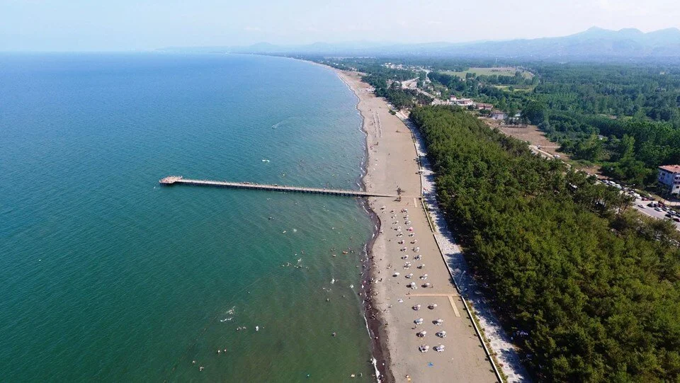

Doğal Güzellikleri
Samsun yeşilin her tonuyla dillere destan bir doğal güzelliğe sahiptir. Kıyı şehri olan Samsun sahilleri, plajları, ormanlık alanları ve yaylaları ile ziyaretçilerini kendine hayran bırakıyor. Samsun, her yıl yerli ve yabancı binlerce turisti ağırlayan Karadeniz’in en uzun sahil şeridine sahip şehirdir.
